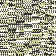

GlitchDex/Y:251
From Glitch City Wiki
Jump to navigationJump to search| F q , | |
| Front: Back: | |
| Bulbapedia link | F q , |
| Equivalent glitch Pokémon | 'M 'N g (FB) (Red/Blue) |
| Generation II equivalent | Wobbuffet |
| Generation II Pokémon needed for Time Capsule exploit | Unknown |
| Name bytes | 85 30 01 24 6F 0B 79 B0 20 F4 50 |
| Index number (hex) | FB |
| Index number (dec) | 251 |
| Pokédex number (Family) |
018 (Pidgeot hybrid) |
| Pokédex marker byte | 0x12 |
| Pokédex flag (seen) | Seen Pidgeot |
| Pokédex flag (own) | Own Pidgeot |
| Type(s) | Normal/Flying |
| Category | |
| Height | 80'3 |
| Weight | 6099.0lb |
| Palette attribute byte | |
| Catch rate constant | 0x2D |
| Experience group | Medium-Slow Experience at Level 100: 1,059,860 Experience at Level 255: 2,170,419 |
| Experience yield | 0xAC |
| Sprite dimensions (base data) | 7x7 |
| Front sprite source pointer | 0D:7892 |
| Back sprite source pointer | 0D:7AD1 |
| Front sprite dimensions (actual) | 0x8 |
| Back sprite dimensions (actual) | 3x8 |
| ← Previous glitch Pokémon | Current glitch Pokémon | Next glitch Pokémon → |
|---|---|---|
| ゥ▼ ‖ゥ♂ (FA) | F q , (FB) | ゥ₽ 4Mn ゥ(FC) |
F q , is a dual-type Normal/Flying-type glitch Pokémon in Pokémon Yellow.
It is a hybrid of Pidgeot.
'M 'N g (FB) is the equivalent trade glitch Pokémon in Pokémon Red and Blue.
It cannot be caught with the Trainer escape glitch or another means of instant encounter, as a '(blank) (33)' glitch Trainer battle will be initiated instead.
There is no Generation II Pokémon that will become this glitch Pokémon in Generation I other than potentially through Celebi (Gold/Silver), Egg (Gold/Silver) and Egg (English Crystal) which convert into difficult to predict Pokémon.
The Pokédex entry of this glitch Pokémon may lock-up the game.
Contents
Methods to obtain
- Party remaining HP glitch or storage box remaining HP glitch with a remaining HP of 251.
- LOL glitch ("5" character)
- International fossil conversion glitch with an Attack stat of 251.
- Equivalent trade of 'M 'N g (FB) from Pokémon Red and Blue.
- Arbitrary code execution
Starting moves
- Gust
- Sand-Attack
- Quick Attack
Evolution(s)
Unknown/none
Pokédex data
Level-up moves
- TM05 (Level 3)
- Pin Missile (Level 4)
- Horn Drill (Level 5)
- Double Slap (Level 6)
- Glitch Move 0xC3 (Level 12)
- Guillotine (Level 14)
- Wing Attack (Level 15)
- Barrier (Level 17)
- Fly (Level 18)
- Razor Wind (Level 19)
- TM03 (Level 20)
- Glitch Move 0xC1 (Level 21)
- Ice Punch (Level 24)
- TM50 (Level 32)
- Spore (Level 33)
- TM13 (Level 35)
- Pay Day (Level 40)
- Whirlwind (Level 42)
- TM15 (Level 45)
- Pound (Level 48)
- Glitch Move 0xC0 (Level 62)
- TM05 (Level 63)
- Pay Day (Level 68)
- TM05 (Level 74)
- Pay Day (Level 75)
- Pay Day (Level 79)
- TM11 (Level 93)
- TM11 (Level 102)
- Wing Attack (Level 103)
- Glitch Move 0xC0 (Level 120)
- TM11 (Level 123)
- TM13 (Level 128)
- Hypnosis (Level 131)
- Aurora Beam (Level 132)
- TM34 (Level 135)
- Cut (Level 139)
- TM11 (Level 145)
- Poison Sting (Level 167)
- TM11 (Level 168)
- TM11 (Level 169)
- Swords Dance (Level 170)
- TM11 (Level 172)
- TM11 (Level 173)
- TM12 (Level 175)
- Swords Dance (Level 179)
- Glitch Move 0xBF (Level 203)
- TM54 (Level 205)
- TM34 (Level 211)
- TM50 (Level 213)
- TM03 (Level 215)
- Swords Dance (Level 220)
- TM09 (Level 225)
- HM02 (Level 229)
- Mimic (Level 234)
- Mimic (Level 250)
- Slam (Level 254)
TM/HM moves
- TM02 Razor Wind
- TM04 Whirlwind
- TM06 Toxic
- TM09 Take Down
- TM15 Hyper Beam
- TM20 Rage
- TM31 Mimic
- TM32 Double Team
- TM33 Reflect
- TM34 Bide
- TM39 Swift
- TM43 Sky Attack
- TM44 Rest
- TM50 Substitute
- HM02 Fly
Base stats
| Base stats | Level 50 stat range | Level 100 stat range |
|---|---|---|
| HP: 83 | 143-189 | 276-369 |
| Attack: 80 | 85-131 | 165-258 |
| Defense: 75 | 80-126 | 155-248 |
| Speed: 91 | 96-142 | 187-280 |
| Special: 70 | 75-121 | 145-238 |
Categories:
- GlitchDex articles
- Pokémon Yellow glitch Pokémon
- Generation I glitch Pokémon
- Glitch Pokémon
- Pidgeot (018) hybrid glitch Pokémon
- Glitch Pokémon unavailable with the Time Capsule exploit
- Glitch Pokémon which learn a glitch move 0xA6-0xC3
- Glitch Pokémon which learn a TM/HM glitch move
- Glitch Pokémon which learn a glitch move
- Glitch Pokémon which are part of the Medium-Slow experience group
- Normal-type glitch Pokémon
- Flying-type glitch Pokémon
- Glitch Pokémon with zero dimension sprites